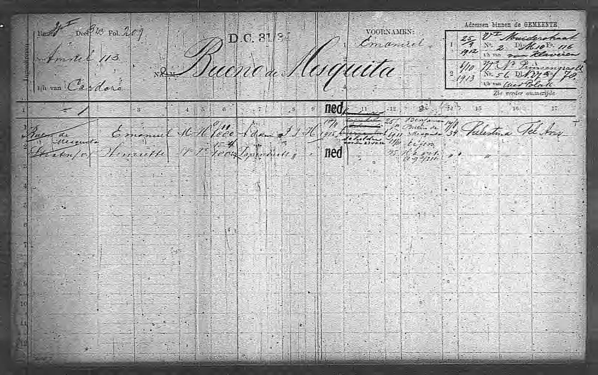
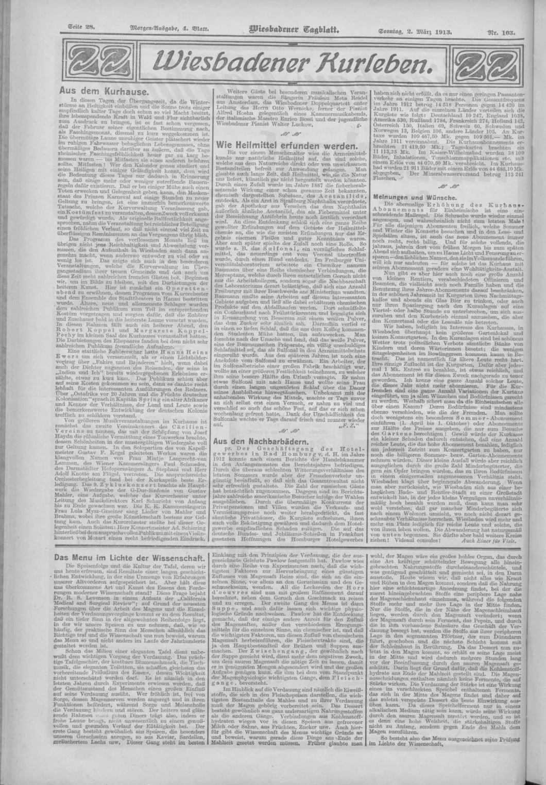

01 / Research
Research.
We research possible heirs to unclaimed estates and assets, whether known or unknown to the family. The work is to build a family tree that can be checked and assemble the documentary chain needed for a claim—not to declare ownership ourselves.

The work
Family trees and documentary histories
We reconstruct family trees through old newspapers, birth and marriage certificates, census and household registers, church records, wills, probate papers, historical archives and local research. Where appropriate, we can prepare a family-history outline with copies or references to the documents behind the tree, so relatives can follow how the generations connect.
Family trees found online can provide useful clues, but important relationships should be checked against original or independent records whenever possible. Research can also be commissioned for family-history interest, without an inheritance claim.
Locating possible beneficiaries
Research may begin from several kinds of historical clue, not necessarily a single public notice. We trace the relevant family branches and investigate whether a living relative may have a claim to an overlooked asset. Identifying a relative is different from establishing legal ownership, and a matching surname is not proof.
Preparing the documentary claim
We obtain the relevant official records, identify any gaps and establish which further documents the responsible bank or estate administrator requires. The aim is to give a claimant or their professional adviser a properly supported case, without acquiring unnecessary certificates or making assumptions about ownership.

The evidence
Independent records matter.
An old address in a newspaper, a grant of probate or the names of grandchildren in a will may be enough to distinguish one family from another. Often it is the combination of several modest records, rather than a single discovery, that makes a convincing genealogical case.
View the documents